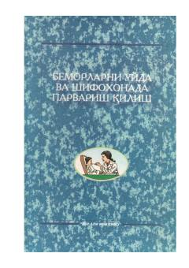

BUUyda va shifoxonada bemorlarni to'g'ri parvarish qilish bo'yicha to'liq qo'llanma.
Ushbu kitob shifokorga qadar ko'rsatiladigan yordam va bemorlarni parvarish qilish bo'yicha barcha masalalarni batafsil yoritadi. Qo'llanmada tashxislash, davolash muolajalariga tayyorgarlik, turli kasalliklarda organizmni nazorat qilish, shuningdek zaharlanish, qon ketish va elektr toki urishi kabi shoshilinch holatlarda yordam berish usullari ko'rsatilgan. Kitob rus tilidan o'zbek tiliga tarjima qilingan bo'lib, O'zbekiston Respublikasi Sog'liqni saqlash vazirligi tashabbusi bilan nashr etilgan.